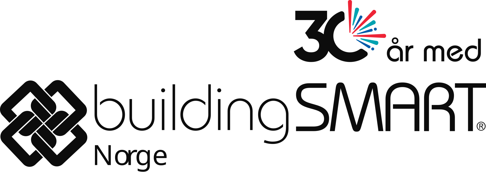

Tidslinjen viser 30 år med buildingSMART og hvordan åpenBIM har utviklet seg fra de første IFC-versjonene på 1990-tallet til dagens internasjonale standarder og norske rammeverk.
Utviklingen er delt i fire parallelle spor – organisatorisk, teknologisk, semantisk og prosessmessig – som samlet har gjort åpenBIM til en robust, internasjonal digital infrastruktur for byggenæringen.